Ce portfolio présente un projet de test réalisé sur l’application bancaire ParaBank. Il met en avant l’analyse fonctionnelle, la stratégie de tests, les scénarios Jira/Xray, l’exécution des tests, la remontée des anomalies et l’automatisation avec Selenium, Python et Behave.
Cas de test
Bugs critiques
Tests automatisés
Modules clés
Modules principaux : Utilisateurs, Comptes, Transferts, Paiement de factures, Demande de prêt, Recherche de transactions.
Contexte
ParaBank est une application bancaire de démonstration utilisée pour simuler des parcours utilisateurs réels : consultation de comptes, ouverture de compte, paiement de factures, consultation des transactions et gestion de la session utilisateur. L’objectif du projet était de vérifier la conformité fonctionnelle, la fiabilité des règles métier et la sécurité des parcours sensibles.
Le projet couvre des fonctionnalités proches d’une application bancaire : soldes, paiements, transactions et accès aux informations de compte.
Concevoir des tests pertinents, exécuter les scénarios, détecter les anomalies bloquantes et documenter les résultats dans une logique qualité.
Utilisation de Jira/Xray pour le suivi des tests, Selenium et Python pour l’automatisation, Behave/Gherkin pour les scénarios BDD.
Méthode
La stratégie s’appuie sur une analyse des risques, une priorisation des parcours critiques et une combinaison de tests positifs, négatifs, limites et de non-régression.
Identification des fonctionnalités principales, des règles métier et des dépendances entre les modules.
Rédaction des cas de test avec prérequis, données de test, étapes, résultats attendus et priorité.
Exécution des tests, suivi des statuts, collecte des preuves et documentation des résultats.
Création de bugs structurés avec description, étapes de reproduction, résultat obtenu, résultat attendu et impact.
Automatisation des parcours critiques avec Selenium WebDriver, Python et Behave pour faciliter la non-régression.
Exécution
Les cas de test sont organisés par module afin de faciliter la lecture, l’exécution et le suivi dans Jira/Xray.
| ID | Module | Cas de test | Priorité | Résultat attendu | Statut |
|---|---|---|---|---|---|
| TC-CPT-01 | Comptes | Afficher la page Accounts Overview | Haute | Les colonnes Account, Balance et Available Amount sont visibles. | Passé |
| TC-CPT-02 | Comptes | Accéder au détail d’un compte | Moyenne | Le clic sur un numéro de compte ouvre la page de détail. | Passé |
| TC-CPT-03 | Comptes | Créer un nouveau compte avec dépôt valide | Haute | Le compte est créé et apparaît dans la liste. | Passé |
| TC-BP-01 | Paiement | Effectuer un paiement valide | Haute | Le paiement est confirmé et le solde est mis à jour. | Passé |
| TC-BP-02 | Paiement | Refuser un montant négatif | Critique | Le paiement doit être bloqué avec un message d’erreur. | Échoué |
| TC-BP-03 | Paiement | Refuser un paiement avec solde insuffisant | Critique | Le système doit refuser le paiement. | Échoué |
| TC-SEC-01 | Sécurité | Contrôler l’accès après déconnexion | Critique | L’utilisateur est redirigé vers la page de connexion. | Échoué |
Anomalies
Les anomalies ont été rédigées avec un format exploitable : description, étapes de reproduction, résultat obtenu, résultat attendu, sévérité, priorité et impact métier.
Résultat obtenu : le paiement est validé malgré un montant négatif.
Résultat attendu : le système doit refuser le paiement.
Impact : incohérence financière et risque fonctionnel critique.
CritiqueRésultat obtenu : un paiement est accepté alors que le solde est insuffisant.
Résultat attendu : le paiement doit être bloqué.
Impact : non-respect d’une règle bancaire essentielle.
CritiqueRésultat obtenu : certaines pages restent accessibles via URL directe.
Résultat attendu : redirection vers la connexion.
Impact : risque de sécurité et exposition de données.
CritiquePreuves QA
Ces captures montrent les livrables du projet : organisation Jira, plan de test, exécution Xray, anomalies, user stories et cas de test détaillés.
Vue du tableau Jira avec les tickets organisés par epic, module et statut.
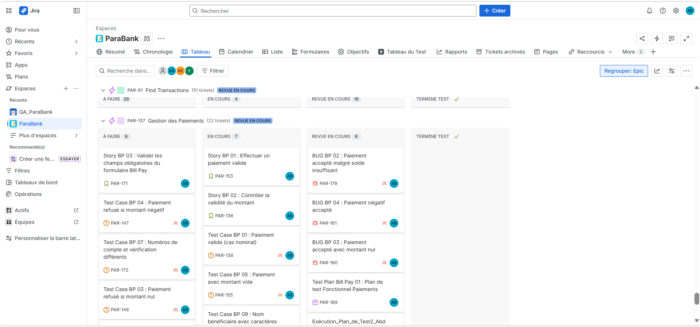
Objectifs, périmètre et critères de sortie.
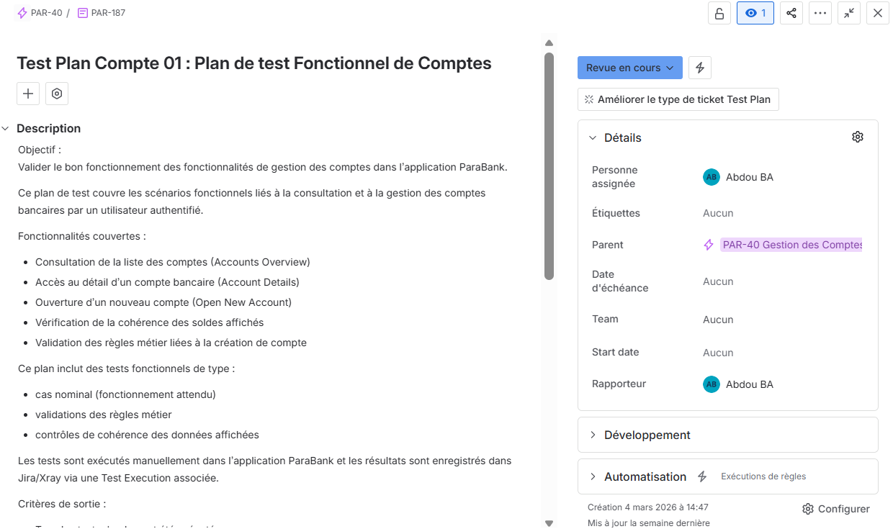
Plan de test : périmètre, objectifs et stratégie
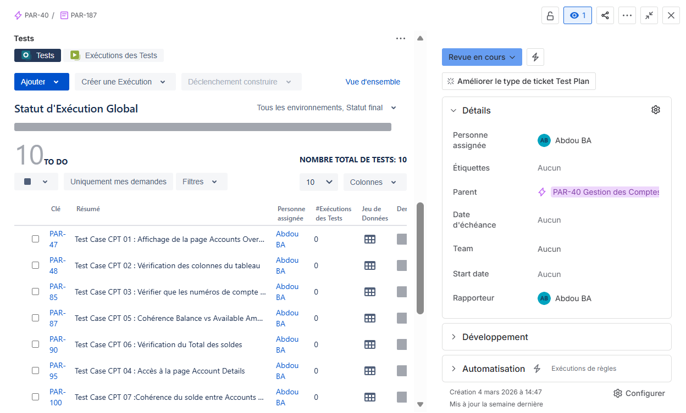
Liste des cas de test (Xray / TO DO)
Résultats des tests avec statuts PASS / FAIL.
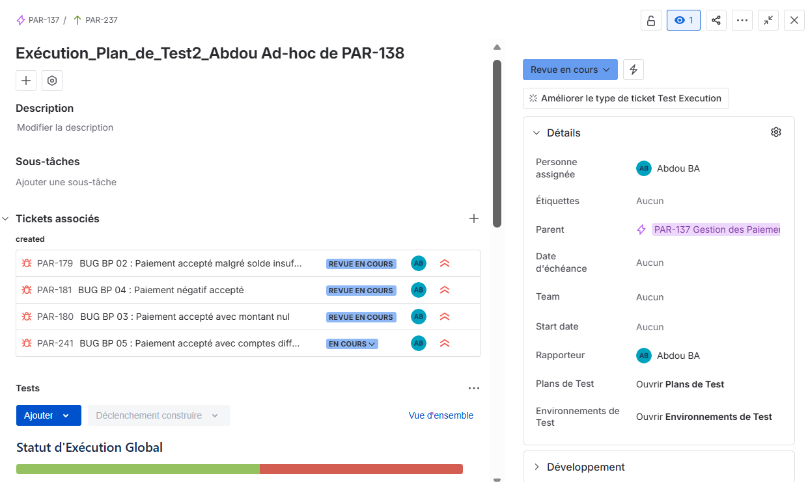
Lancement des tests dans Xray
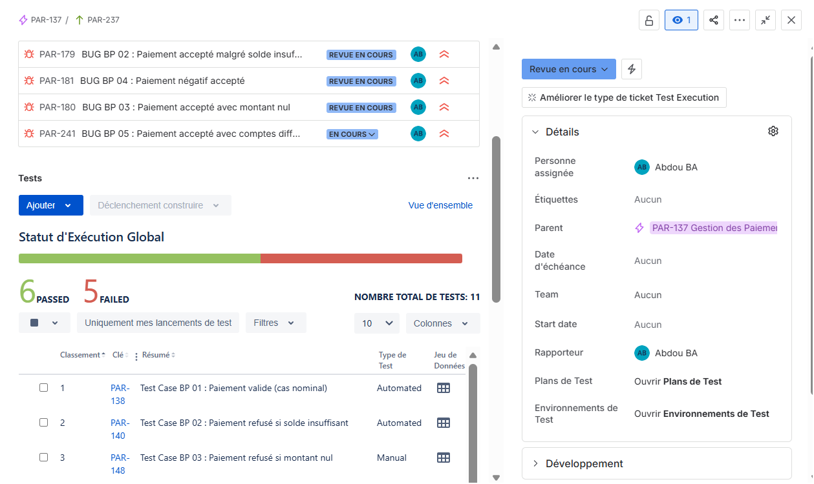
Résultats des tests : PASS / FAIL
Bug détecté avec étapes de reproduction et impact métier.
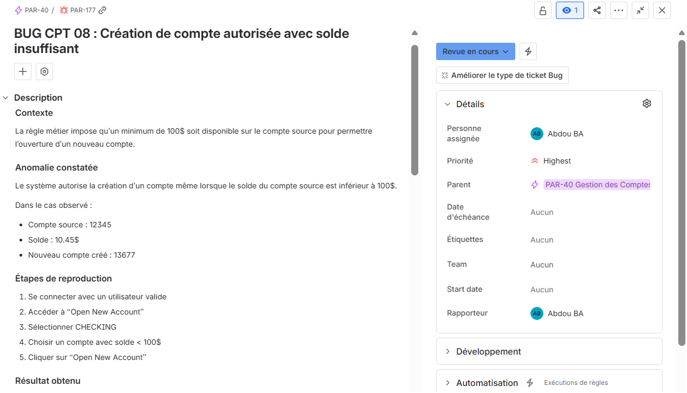
Bug détecté
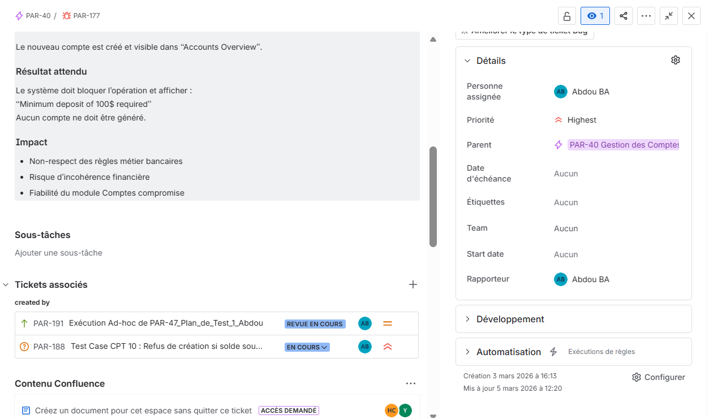
Détails / reproduction
User Story avec critères d’acceptation et lien vers les cas de test.
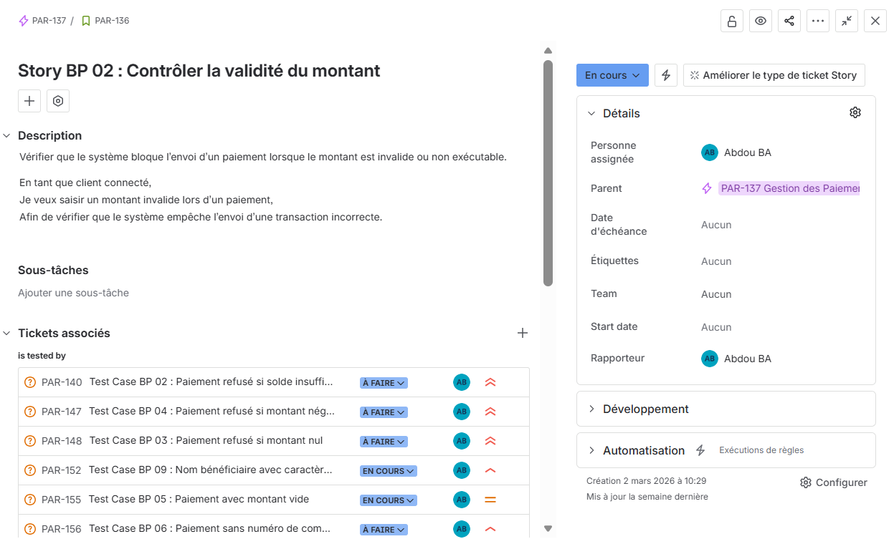
Cas de test détaillé avec étapes et résultat attendu.
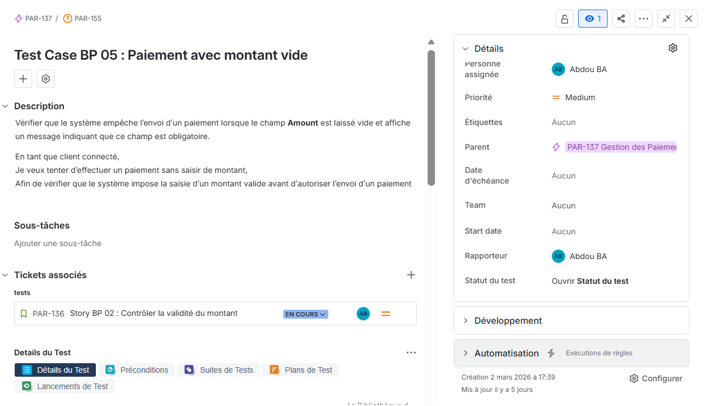
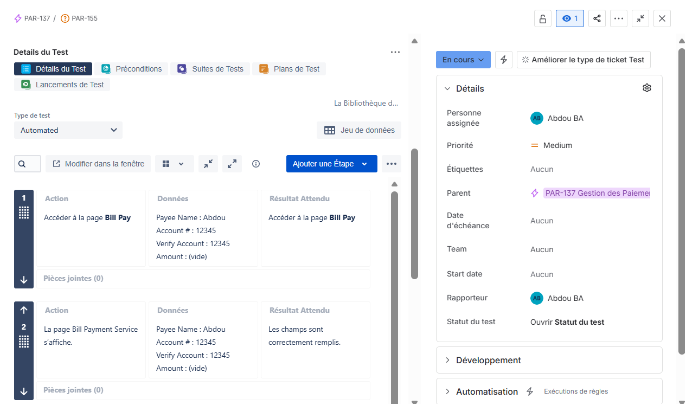
Étapes du test dans Xray
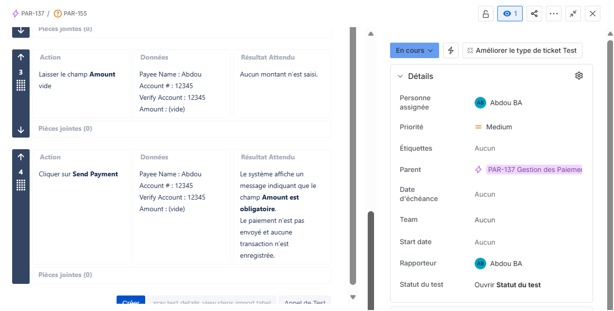
Résultat attendu et validation
Automatisation
Les tests automatisés ciblent les parcours critiques pour faciliter les campagnes de non-régression : connexion, consultation des comptes, paiement et vérification de messages d’erreur.
Feature: Paiement de facture sur ParaBank
Scenario: Refuser un paiement avec un montant négatif
Given l'utilisateur est connecté à ParaBank
When il accède au module Bill Pay
And il saisit un montant négatif
And il valide le paiement
Then le paiement doit être refusé
And un message d'erreur doit être affichéfrom selenium import webdriver
from selenium.webdriver.common.by import By
from selenium.webdriver.support.ui import WebDriverWait
from selenium.webdriver.support import expected_conditions as EC
def test_login_parabank():
driver = webdriver.Chrome()
wait = WebDriverWait(driver, 10)
driver.get("https://parabank.parasoft.com/parabank/index.htm")
driver.maximize_window()
wait.until(EC.visibility_of_element_located((By.NAME, "username"))).send_keys("john")
driver.find_element(By.NAME, "password").send_keys("demo")
driver.find_element(By.XPATH, "//input[@value='Log In']").click()
title = wait.until(EC.visibility_of_element_located((By.TAG_NAME, "h1"))).text
assert "Accounts Overview" in title
driver.quit()Stack QA
L’environnement du projet couvre la gestion des tests, l’exécution manuelle, le suivi des anomalies, l’automatisation et le versioning du code.